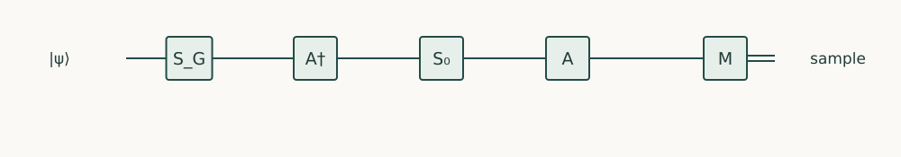

Quantum Algorithms · Chapter 5 · Draft lesson
Amplitude Manipulation
How can a useful but unlikely outcome be made observable without knowing the answer?
Chapter direction
Starting point: Chapters 2–4 and the introductory course’s search and amplification arguments.
Anchor example: Amplifying a nonuniform preparation with a known success test.
This lesson includes explanations, worked examples, and problems with solutions. Advanced results whose proofs are outside the chapter are identified explicitly.
5.1 Reflections
A preparation circuit produces a valid answer only one time in ten. If validity can be tested coherently, can we improve this without already knowing the answer? The useful geometry lives in a plane defined by successful and unsuccessful components.
5.1.1 Prepared-state reflections
Let \(A\ket0=\ket\psi=\sin\theta\ket G+\cos\theta\ket B\), where G and B are normalized projections onto the good and bad subspaces. Then the initial success probability is \(p=\sin^2\theta\). The reflection \(R_\psi=A(2\ket0\bra0-I)A^\dagger\) fixes \(\ket\psi\) and reverses orthogonal components. It requires both A and its inverse. The predicate reflection \(S_G=I-2\Pi_G\) negates good states; computing and uncomputing the predicate implements it.
5.1.2 Amplification beyond uniform search
In basis (G,B), multiplication gives
\[Q=R_\psi S_G=\begin{pmatrix}\cos2\theta&\sin2\theta\\-\sin2\theta&\cos2\theta\end{pmatrix},\qquad Q^k\ket\psi=\sin((2k+1)\theta)\ket G+\cos((2k+1)\theta)\ket B.\]
Thus order \(1/\sqrt p\) iterations suffice to reach a constant success probability for small p when a suitable stopping count is known. This applies to a nonuniform preparation as well as uniform search. For p=1/4, θ=π/6 and one iteration makes success certain. Each iteration includes a predicate phase operation and a forward and inverse preparation; these may dominate the cost.
Problem 5.1. If p=1/4, what happens after two ordinary iterations?
Worked solution
The success is \(\sin^2(5\pi/6)=1/4\). One iteration was optimal; continuing can undo the benefit.

5.2 Phase Sequences
5.2.1 Exact amplification
Ordinary iterations may overshoot the good direction. If p is known, choose a count landing near that direction, then replace the final π phase flips by appropriately chosen selective phases. The adjustable rotations can close the remaining angular gap and give exact amplification. Those phases depend on the known overlap and require implementation precision; this is not an exact algorithm when p is merely guessed. One must solve the resulting two-dimensional matrix equation for the chosen convention rather than reuse angles with incompatible signs.
There is also an explicit exact construction using one extra flag when p is known and positive. Choose \(k=\lceil\pi/(4\theta)-1/2\rceil\), set \(\theta'=\pi/(4k+2)\), and put \(p'=\sin^2\theta'\). This choice ensures \(p'\leq p\). Prepare an independent flag with probability \(p'/p\) of being one, and redefine success to mean “the original predicate is good and the flag is one.” The joint preparation has success probability exactly p′. Reflect about that whole preparation and amplify the joint predicate for k iterations. Its success is \(\sin^2((2k+1)\theta')=1\).
For p=1/2, choose k=1 and p′=1/4. A fair flag reduces the joint success probability to 1/4, for which one ordinary amplification step is exact. The final output still satisfies the original predicate. This construction exchanges a known preparation adjustment and an extra qubit for exact stopping; it requires the exact overlap and accurately implemented rotations. If p=0, amplification cannot create a good component that the preparation never supplies.
5.2.2 Fixed-point constructions and uncertainty
A transparent fixed-point example uses π/3 selective phases. Set \(R_0=I+(e^{i\pi/3}-1)\ket0\bra0\) and \(R_G=I+(e^{i\pi/3}-1)\Pi_G\). Replace A by \(A R_0 A^\dagger R_G A\). If A has failure probability ε, direct expansion of its bad component gives multiplier \(e^{i\pi/3}\epsilon\), so the new failure is \(\epsilon^3\). It improves success without overshooting, but recursive use triples the number of A/A† calls at each level and does not retain the optimal quadratic search scaling. More sophisticated fixed-point phase sequences can give quadratic scaling with a known lower bound on p; the lower bound and target error determine the sequence.
Problem 5.2. Apply one π/3 construction when the initial failure is 1/2.
Worked solution
The new failure is \((1/2)^3=1/8\). There are three uses of A or A† instead of one, plus the selective phases.
5.3 Estimation and Search
5.3.1 Amplitude estimation as a composition of techniques
The eigenvalues of Q are \(e^{\pm2i\theta}\). Phase estimation on controlled powers of Q therefore estimates θ and hence p. Away from exact grid points the phase-estimation error must be included. Since \(|\sin^2\theta-\sin^2\widetilde\theta|\leq|\theta-\widetilde\theta|\), phase resolution of order ε is sufficient for additive probability error ε. Standard amplitude estimation needs order \(1/\epsilon\) coherent Q uses for constant confidence, whereas ordinary independent sampling needs order \(1/\epsilon^2\) in the worst case. This comparison assumes coherent preparation, inverse access, and controlled operations; it is not a claim about an arbitrary data file.
5.3.2 Minimum finding and variable-time extensions
Minimum finding repeatedly searches for an element below the current threshold, then updates the threshold classically. Unknown numbers of improving elements require a schedule that does not assume p. Variable-time amplification addresses computations whose branches stop at different times, using their stopping structure rather than charging the worst time everywhere. These are additional constructions with extra analysis: our plane-rotation proof does not establish either runtime bound. For any implementation report the success-test cost, preparation cost, stopping rule, and verification cost separately.
Problem 5.3. Can amplitude estimation read a probability to arbitrary precision using a fixed number of controlled-Q calls?
Worked solution
No. Smaller phase grid spacing requires larger controlled powers, whose implementation cost grows. The compact power notation hides these repeated queries unless an alternative access model supplies them.
Pairing reflections turns overlap into a rotation angle. Quantum walks extend this idea by choosing reflections from a graph’s local structure.
Sources and further study: Brassard et al., Amplitude Amplification and Estimation; Grover, A different kind of quantum search.